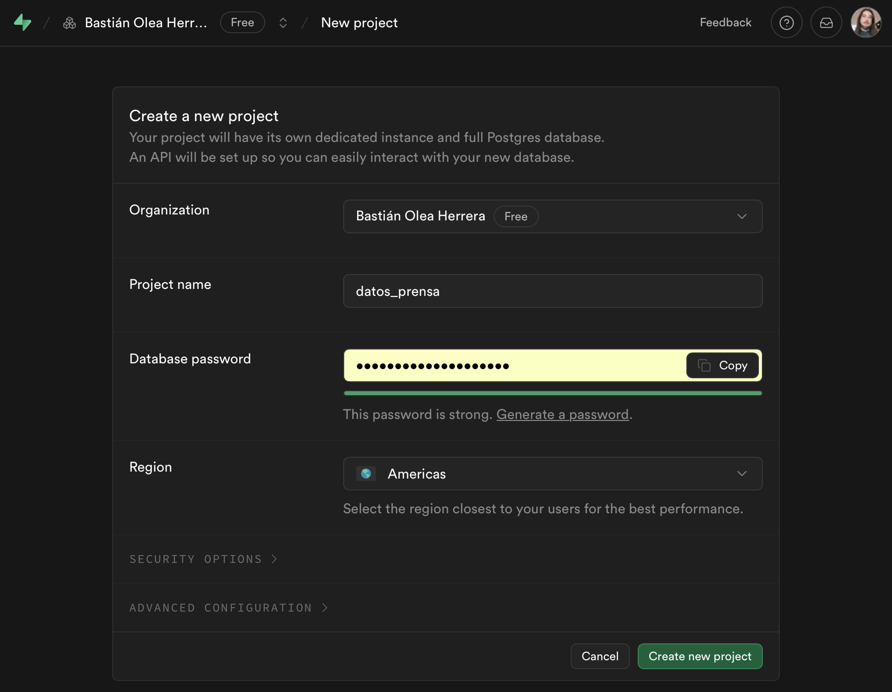
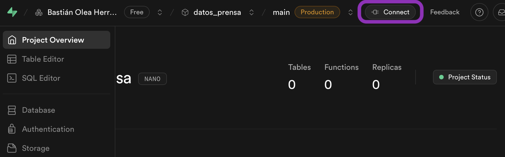

Crear y conectarse a una base de datos en R
6/11/2025
Índice
Qué es una base de datos
Cuando se habla de datos, mucha gente (me incluyo) usa coloquialmente el término base de datos para referirse a datos que están en Excel o csv 😣 Pero la realidad es que una base de datos es algo distinto: un sistema de almacenamiento y procesamiento de datos que puede contener múltiples tablas, que está hosteado en un computador, servidor o en la nube, y que entrega datos de acuerdo a las solicitudes que se le hagan. En este sentido una base de datos es distinto a leer un archivo, porque la base de datos siempre tiene cargados los datos, y está esperando que se los pidan para entregarlos de manera optimizada.
Una de las diferencias principales al usar bases de datos es que no necesitas cargar los datos en tu computador, porque se encuentran en la base de datos remota. En vez de cargarlos, los puedes solicitar para que la base los procese y te los entregue. Solamente cuando los necesitas en memoria, los cargas localmente.
Pero además, una base de datos puede hacer más que simplemente almacenar los datos. Las solicitudes que hacemos a la base, usualmente hechas por medio del lenguaje SQL, son procesadas de forma rápida y eficiente, entregándote solamente lo necesario. De este modo puedes acceder a conjuntos de muchos millones de observaciones sin que tu computador explote 💥
Cuándo usar una base de datos
- Cuando la cantidad de observaciones es muy grande, y te encuentras con límites de memoria
- Cuando necesitas acceder a los datos desde varios equipos o aplicaciones
- Cuando tus datos ocupan mucho almacenamiento local y preferirías que estuvieran en la nube
- Cuando tienes muchos datos, y solo los cargas para obtener subconjuntos o resúmenes de los mismos
- Cuando quieres optimizar la velocidad de acceso a los datos, sobre todo la velocidad de cargar archivos
- Cuando tienes un conjunto de datos complejos que requieren de múltiples tablas relacionadas entre sí
- Cuando no puedes mantener todos los datos en memoria
A continuación veremos cómo crear una base de datos gratuita, cómo conectarnos a ella desde R, y cómo subir y trabajar con los datos en la base de datos remota.
Crear una base de datos en Supabase
Como una base de datos requiere estar instalada en un computador o servidor, necesitamos un proveedor que nos permita alojar la base de datos1. Una opción es Supabase, una plataforma para bases de datos que se basa en código abierto, y que ofrece bases de datos Postgres gratuitas para proyectos pequeños.
Para empezar, crea una cuenta en Supabase.
Una vez en tu cuenta, en la sección Projects, crea un nuevo proyecto:

Un proyecto es una instancia en el servidor de Supabase con su propia base de datos Postgres2, donde podrás escribir tus tablas de datos. Ponle un nombre y define una contraseña segura. Con esta contraseña podrás acceder a tus datos.
Luego de crear el proyecto se abrirá el panel principal, donde te indica que (por ahora) tienes cero tablas 👎🏻
Conectarse a la base de datos
Con el proyecto creado, ahora podemos conectarnos a la base de datos. Pero necesitamos crear una conexión con la misma, y para ello requerimos ciertas credenciales y datos para que tu computador conecte con el servidor donde está tu base de datos.
Presiona Connect en la parte superior. para ver los parámetros de conexión.
Se abrirá un panel donde se nos entregarán los parámetros de acceso a la base de datos. Presiona View parameters para desplegar la información:

Necesitamos los parámetros host, port, database y user. Ahora iremos a R para introducirlos y conectarnos.
Credenciales de acceso
Para interactuar con bases de datos, necesitamos el paquete {DBI}, que gestiona las conexiones con bases de datos, y en nuestro caso el paquete {RPostgres}, que es el motor para trabajar con bases de datos Postgres.
install.packages("DBI")
install.packages("RPostgres")
Para conectarnos a una base de datos desde R usamos la función dbConnect(). Dentro de esta función explicitamos el driver de la base de datos (en este caso Postgres()), y los parámetros de conexión que obtuvimos en Supabase: dbname, host, port, user y password.
db_con <- DBI::dbConnect(
RPostgres::Postgres(),
dbname = "postgres",
host = "host",
port = 5432,
user = "postgres",
password = "contraseña"
)
⚠️ ¡Pero espera! No es seguro escribir credenciales privadas en un script. Así que vamos a seguir las buenas prácticas y vamos a guardar las credenciales de forma segura.
Una opción es no escribir la contraseña y en su lugar usar rstudioapi::askForPassword() para ingresar la contraseña manualmente pero de forma segura. Sin embargo, no queremos estar escribiendo la contraseña cada vez que necesitemos los datos!
Variables de entorno
Vamos a crear un script donde podamos guardar variables de entorno, que son variables que R puede leer pero que no quedan en el código, y que además siempre se cargan cuando abrimos el proyecto. Es decir, quedan disponibles para poder usarlas, pero estarán ocultas. Así podemos compartir y respaldar nuestro código sin exponer información sensible, y podemos conectarnos a la base de datos sin tener que volver a introducir las credenciales.
Creamos un script de entorno llamado .Renviron en la raíz de nuestro proyecto ejecutando una función que lo hace por nosotres:
usethis::edit_r_environ(scope = "project")
En el script que se abre guardamos las credenciales de la siguiente manera:
db_host=db.blablablabla.supabase.co
db_port=5432
db_user=postgres
db_pass=clavebasededatosprueba
Una vez guardadas las credenciales, reiniciamos la sesión de R para que se lean las variables de entorno (siempre se leerán al iniciar R), o podemos ejecutar readRenviron(".Renviron") para cargarlas.
.Renviron a tu .gitignore para evitar subir a internet credenciales privadas!
Conexión a la base de datos
Procedemos a hacer la conexión a la base de datos de forma segura, usando Sys.getenv() para obtener las variables de entorno que guardamos en .Renviron:
library(DBI)
library(RPostgres)
db_con <- DBI::dbConnect(
RPostgres::Postgres(),
dbname = "postgres",
host = Sys.getenv("db_host"),
port = Sys.getenv("db_port"),
user = Sys.getenv("db_user"),
password = Sys.getenv("db_pass")
)
Al conectarnos creamos un objeto que representa nuestra conexión a la base de datos.
db_con
<PqConnection> postgres@db.ybqnpazmjvictxbevqqk.supabase.co:5432
Usaremos este objeto para interactuar con la base de datos.
Crear una tabla en la base de datos
Con la función dbWriteTable() creamos en la base de datos una tabla nueva a partir de un dataframe; por ejemplo, usando el conjunto de datos iris que viene por defecto en R.
library(DBI)
# crear tabla
dbWriteTable(conn = db_con, # conexión a la base
name = "prueba", # nombre de la tabla a crear
iris # datos a escribir
)
Confirmamos que la tabla se subió a la base de datos consultándole a la base los nombres de las tablas existentes:
dbListTables(db_con)
[1] "prueba" "pg_stat_statements"
[3] "pg_stat_statements_info"
También podemos confirmar en Supabase que la tabla existe:

Ahora nuestros datos están almacenados remotamente en la base de datos! Acaso ésta será la mística nube de la que tanto hablan? ☁️
Leer una tabla desde la base de datos
Podemos leer las tablas existentes en la base de datos con dbReadTable() tan solo indicando el nombre de la tabla:
datos_db <- dbReadTable(db_con, # conexión a la base
"prueba" # nombre de la tabla a leer
)
head(datos_db)
Sepal.Length Sepal.Width Petal.Length Petal.Width Species
1 5.1 3.5 1.4 0.2 setosa
2 4.9 3.0 1.4 0.2 setosa
3 4.7 3.2 1.3 0.2 setosa
4 4.6 3.1 1.5 0.2 setosa
5 5.0 3.6 1.4 0.2 setosa
6 5.4 3.9 1.7 0.4 setosa
De esta manera solicitamos a la base que nos entregue los datos de la tabla, y los cargamos en la sesión de R como un dataframe. Desde este punto podemos usar los datos normalmente, pero a continuación veremos una forma mejor de hacerlo 🫢
Procesar desde la base de datos con {dplyr}
Una de las ventajas de una base de datos es solicitar y obtener datos procesados desde la base de datos 🏭 Normalmente esto se hace con el lenguaje SQL, pero en R hay formas más sencillas:
usando directamente {dplyr} para interactuar con la base de datos.
Para ello
instalamos {dbplyr}, paquete que traducirá el código de {dplyr} en SQL.
install.packages("dbplyr")
Esta funcionalidad se carga automáticamente al cargar {dplyr}.
Para obtener datos desde la base de datos, usamos tbl() con el objeto de conexión y el nombre de la tabla, y recibiremos los datos en el formato tibble de {dplyr}:
library(dplyr)
datos_db <- tbl(db_con, "prueba")
datos_db
# Source: table<"prueba"> [?? x 5]
# Database: postgres [postgres@db.ybqnpazmjvictxbevqqk.supabase.co:5432/postgres]
Sepal.Length Sepal.Width Petal.Length Petal.Width Species
<dbl> <dbl> <dbl> <dbl> <chr>
1 5.1 3.5 1.4 0.2 setosa
2 4.9 3 1.4 0.2 setosa
3 4.7 3.2 1.3 0.2 setosa
4 4.6 3.1 1.5 0.2 setosa
5 5 3.6 1.4 0.2 setosa
6 5.4 3.9 1.7 0.4 setosa
7 4.6 3.4 1.4 0.3 setosa
8 5 3.4 1.5 0.2 setosa
9 4.4 2.9 1.4 0.2 setosa
10 4.9 3.1 1.5 0.1 setosa
# ℹ more rows
Esta tabla generada desde la base de datos no es un dataframe normal 😱 sino que es una conexión abierta con la base de datos:
class(datos_db)
[1] "tbl_PqConnection" "tbl_dbi" "tbl_sql" "tbl_lazy"
[5] "tbl"
Esto nos permite seguir pidiéndole instrucciones que se procesarán en la base, no en nuestra sesión local de R. Esto es lo que nos permite realizar cálculos con datos de grandes volúmenes o manejar bases de datos gigantes que no caben en la memoria de tu computador 😲
Usemos la tabla obtenida desde la base de datos para hacer un filtro y calcular un promedio:
calculo_db <- datos_db |>
filter(Species == "setosa") |>
summarise(mean_sepal_length = mean(Sepal.Length))
Estas operaciones se realizan remotamente en la base, y con una evaluación perezosa 🦥 (lazy evaluation); es decir, solamente se calcula el resultado cuando es estrictamente necesario. Entonces, recién al solicitar el resultado la base de datos va a realizar el cálculo requerido:
calculo_db
Warning: Missing values are always removed in SQL aggregation functions.
Use `na.rm = TRUE` to silence this warning
This warning is displayed once every 8 hours.
# Source: SQL [?? x 1]
# Database: postgres [postgres@db.ybqnpazmjvictxbevqqk.supabase.co:5432/postgres]
mean_sepal_length
<dbl>
1 5.01
Podemos confirmar que el cálculo se hizo en la base de datos usando show_query() para ver el código SQL que se usó para hacer el cálculo:
calculo_db |> show_query()
<SQL>
SELECT AVG("Sepal.Length") AS "mean_sepal_length"
FROM (
SELECT "prueba".*
FROM "prueba"
WHERE ("Species" = 'setosa')
) AS "q01"
🪄✨ Magia! Es como si hubiéramos aprendido SQL: combinamos el poder de SQL con la conveniencia de R.
Si necesitamos traer los datos desde la base a tu computador, los cargamos en la memoria con la función collect():
datos_df <- datos_db |>
filter(Species == "setosa") |>
collect()
Ahora sí que sí el objeto datos_df se encuentra cargado en tu sesión local de R como un dataframe normal.
Como los cálculos que hagamos sobre los datos se traducen desde R a SQL y luego se nos entregan, un uso importante de collect() es para anteponerlo a operaciones que no tienen traducción a SQL.
Por ejemplo, me consta que las funciones de {forcats} no se traducen a SQL:
datos_db |>
group_by(Species) |>
summarise(Sepal.Width = mean(Sepal.Width)) |>
mutate(Species = forcats::fct_reorder(Species, Sepal.Width))
Error in `forcats::fct_reorder()`:
! No known SQL translation
En este caso, anteponemos collect() para pasar de SQL a R en medio del proceso y listo.
datos_db |>
group_by(Species) |>
summarise(Sepal.Width = mean(Sepal.Width)) |>
collect() |> # cargar a la memoria
mutate(Species = forcats::fct_reorder(Species, Sepal.Width)) |>
arrange(Species)
# A tibble: 3 × 2
Species Sepal.Width
<fct> <dbl>
1 versicolor 2.77
2 virginica 2.97
3 setosa 3.43
De esta forma, aprovechamos la base de datos SQL lo más posible, y cuando necesitemos operaciones más complejas nos pasamos a R! 😉
Ya sea porque necesitas la capacidad de almacenamiento, porque requieres procesamiento optimizado de grandes volúmenes de datos, o porque vas a usar tus datos en una aplicación o plataforma, aprender a manejar bases de datos es una habilidad crucial para escalar tus capacidades y pasar al siguiente nivel ✨
Avanzado
Conexión por IPv4
Las bases de Supabase usan IPv6 por defecto, pero algunos servicios requieren de conexiones IPv4 por limitaciones técnicas o de infraestructura. Uno de estos servicios es ShinyApps.io, el servicio que uso yo para alojar mis aplicaciones Shiny.
Para usar IPv4 en conexiones a bases de datos Supabase, en el panel de Conexión (el mismo que usaste para obtener las credenciales), en la opción Method puedes elegir Session pooler para obtener credenciales IPv4.

Recursos
- Fecha de publicación:
- November 6, 2025
- Extensión:
- 11 minute read, 2180 words
- Categorías:
- Tutoriales
- Tags:
- datos optimización dplyr